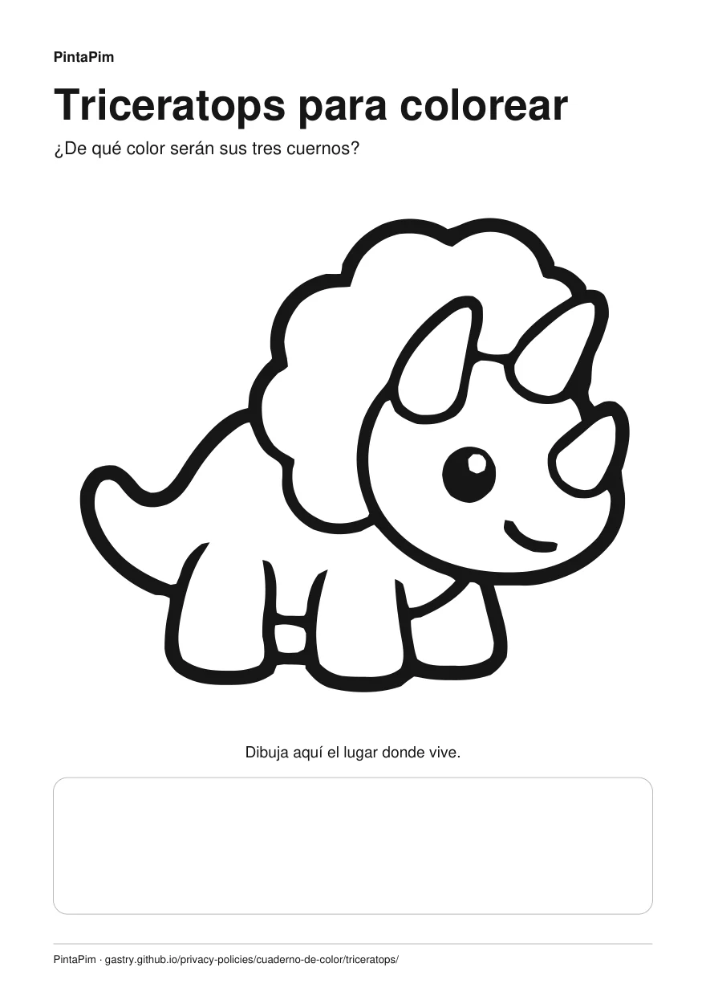
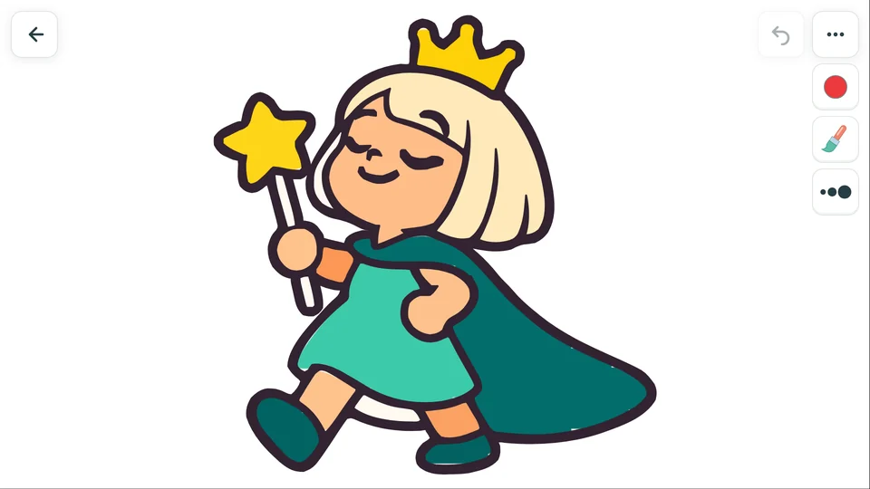

Triceratops para colorear
¿De qué color serán sus tres cuernos? Pinta el dinosaurio y dibuja el lugar donde vive.
Descargar láminaPDF gratuito · 1 página A4 · Blanco y negro


Colorear en PintaPim
Este triceratops forma parte de un juego infantil de dibujo y color para Android. La primera versión está en revisión en Google Play.
Conocer el juego